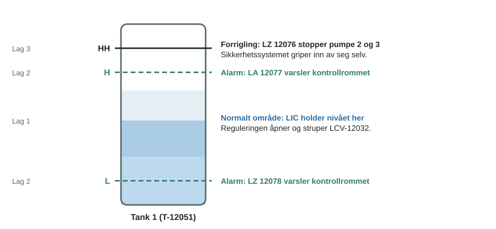

Hva er en forrigling?
En forrigling griper inn av seg selv når noe går galt i anlegget, for eksempel ved å stoppe en pumpe før en tank renner over. På denne siden ser du hvilke forriglinger pumperommet har, og hvordan du finner dem på tegningene. Det er grunnlaget for å lese en forriglingsmatrise.
Kort om forriglinger
En forrigling er en automatisk sikring som stopper utstyr eller hindrer en handling når en farlig tilstand oppstår. Den virker uten at operatøren gjør noe. Når en forrigling har slått inn, må den tilbakestilles før utstyret kan startes igjen.
Hvordan forriglinger virker, hvorfor de må tilbakestilles, og hvorfor de aldri skal kobles ut på egen hånd, lærer du på siden Forriglinger i temaet Automasjon. Her ser vi på hvordan forriglingene vises i skjemaene.
Regulering, alarm og forrigling
I en tank er det ofte flere lag med sikring. Figuren viser de tre første lagene i tank 1 i pumperommet. I tillegg har tanken et overløp i toppen.

- Regulering: LIC holder nivået i det normale området. Slik går anlegget hver dag.
- Alarm: Blir nivået for høyt (H) eller for lavt (L), får operatøren en alarm og kan gripe inn.
- Forrigling: Fortsetter nivået å stige til høyt-høyt (HH), stopper sikkerhetssystemet pumpe 2 og 3 av seg selv.
- Overløp: Svikter alt annet, renner vannet ut gjennom overløpsrøret i toppen av tanken, til tank 2.
Forriglingen har sin egen nivåbryter (LZ 12076). Den bruker ikke nivågiveren som reguleringen bruker (LT 12075). Viser LT 12075 feil, virker forriglingen likevel.
Forriglingene i pumperommet
Pumperommet har tre slags forriglinger:
| Hva skjer | Hvem merker det | Hva forriglingen gjør | Hvorfor |
|---|---|---|---|
| For lite vann strømmer inn til en pumpe (LL) | Strømningsvakten på pumpa: FZ 12071, 12072 eller 12073 | Stopper den pumpa | En pumpe som går uten vann, kan bli ødelagt. |
| Høyt-høyt nivå (HH) i tank 1 eller tank 2 | Nivåbryterne LZ 12076 (tank 1) og LZ 12081 (tank 2) | Stopper pumpene som kan fylle tanken | Tanken skal ikke renne over. |
| Noen trykker på nødstopp | Nødstoppknappen i pumperommet eller i kontrollrommet | Stopper alle pumpene | Alt skal kunne stoppes med en gang hvis noe skjer. |
Høyt-høyt nivå i tank 2 stopper alle tre pumpene. Pumpe 3 pumper bare til tank 1, men tank 1 har et overløp i toppen som renner til tank 2. Vann fra pumpe 3 kan derfor havne i tank 2.
H og L i tankene og lavt lufttrykk på PT 12051 gir bare alarm. De stopper ingenting.
ESD og PSD
I forriglingsmatrisen for pumperommet står det ESD og PSD. Det er to typer nedstengning:
- ESD (nødavstengning, på engelsk emergency shutdown) stenger ned for å verne folk, miljø og anlegg ved en nødsituasjon. I pumperommet stopper ESD 2 alle pumpene. Den utløses av nødstopp.
- PSD (prosessavstengning, på engelsk process shutdown) stenger ned en del av prosessen når noe går galt i driften. I pumperommet stopper PSD 3.1, 3.2 og 3.3 hver sin pumpe.
Tallene viser nivået på nedstengningen. Store anlegg har flere nivåer, og hvert nivå stenger ned en større eller mindre del av anlegget.
Hvor finner du forriglingene?
- I P&ID-en: Instrumentene som utløser forriglinger, har tagnummer og grense, for eksempel LZ 12076 med HH. Merknadene på tegningen kan forklare hva som skjer, for eksempel at høyt-høyt nivå i en tank stopper én eller flere pumper.
- I forriglingsmatrisen: Her står alle forriglingene samlet i én tabell, med hva som utløser dem og hva de gjør. Det lærer du på neste side.
Forriglinger må testes jevnlig for å se at de virker, og resultatet skal skrives ned. En forrigling skal aldri kobles ut (forbikobles) uten tillatelse etter bedriftens prosedyre. Er en forrigling forbikoblet, er sikringen borte, og operatøren må følge ekstra godt med.
Test deg selv
1. Hva er en forrigling?
- En alarm som ber operatøren gjøre noe
- En automatisk sikring som stopper utstyr eller hindrer en handling når noe er farlig
- En regulator som holder nivået stabilt
Forriglingen griper inn av seg selv. En alarm varsler bare, og en regulator styrer den vanlige driften.
2. Nivået i tank 1 når H. Hva skjer?
- Det kommer en alarm i kontrollrommet
- Pumpe 2 og 3 stopper
- Alle pumpene stopper
H gir alarm fra LA 12077. Først ved HH stopper forriglingen LZ 12076 pumpe 2 og 3.
3. Hvorfor stopper pumpa når strømningsvakten melder LL?
- For å spare strøm
- Fordi tanken er full
- Fordi pumpa kan bli ødelagt hvis den går uten vann
Strømningsvakten sitter på innløpet til pumpa. Får pumpa for lite vann, kan den bli skadet.
4. Hvorfor har forriglingen i tank 1 sin egen nivåbryter (LZ 12076), og bruker ikke LT 12075?
- Slik at forriglingen virker selv om LT 12075 viser feil
- Fordi LT 12075 bare måler temperatur
- Fordi det er billigere
Bruker forriglingen og reguleringen samme måler, kan én feil slå ut begge. Med egen bryter er forriglingen uavhengig.
5. Hva er forskjellen på ESD og PSD i pumperommet?
- Det er ingen forskjell
- ESD 2 stopper alle pumpene ved nødstopp. PSD stopper én pumpe når noe går galt i driften.
- ESD gir bare alarm, og PSD stopper pumpene
ESD er nødavstengning og stopper hele pumperommet. PSD er prosessavstengning og stopper bare den pumpa det gjelder.
Ordliste
| Begrep | Forklaring | Engelsk |
|---|---|---|
| forrigling | Automatisk sikring som stopper utstyr eller hindrer en handling når en farlig tilstand oppstår. | interlock |
| nødstopp | Stor rød knapp som stopper utstyret med en gang når noen trykker på den. | emergency stop |
| nødavstengning (ESD) | Nedstengning som verner folk, miljø og anlegg i en nødsituasjon. | emergency shutdown (ESD) |
| prosessavstengning (PSD) | Nedstengning av en del av prosessen når noe går galt i driften. | process shutdown (PSD) |
| forbikobling | Å gå utenom: enten å lede strømmen utenom et utstyr, eller å koble ut en forrigling for en kort tid. Å koble ut en forrigling krever tillatelse. | bypass, override |
Les mer
- Forriglinger i temaet Automasjon: hvordan forriglinger virker, tilbakestilling, forbikobling og feilsikker kobling.
- Barrierer i temaet HMS: sikringer som ligger lag på lag.
- Instrumenter og tagnummer: L, LL, H og HH.
Om kildene: Teksten og figurene på denne siden er laget for dette nettstedet. Eksemplene bygger på det tekniske flytskjemaet og forriglingsmatrisen for pumperommet ved Sauda vgs, slik funksjonene er testet av læreren. Siden bygger på undervisningsopplegg i kjemiprosess- og laboratoriefag ved Sauda vgs, som er utarbeidet med utgangspunkt i blant annet Kjemien stemmer, Laboranten og åpne nettkilder.